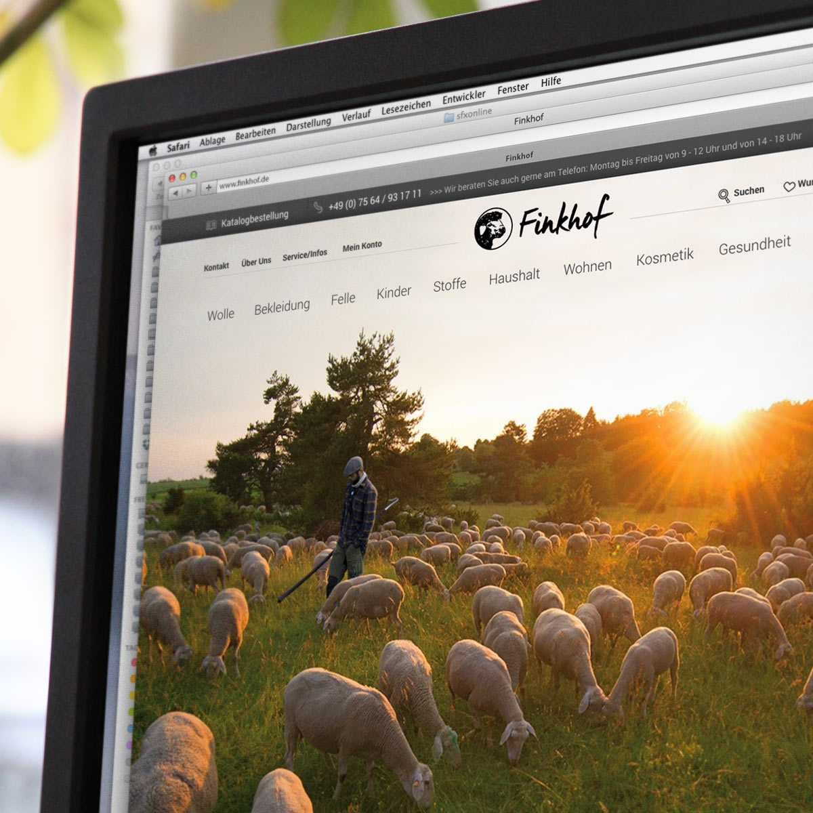
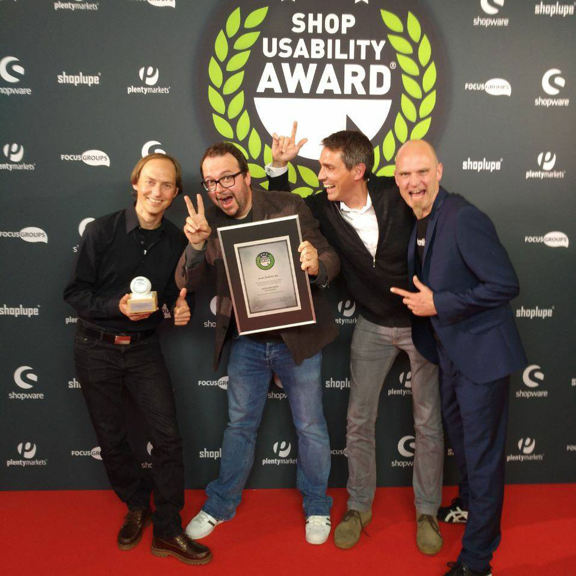
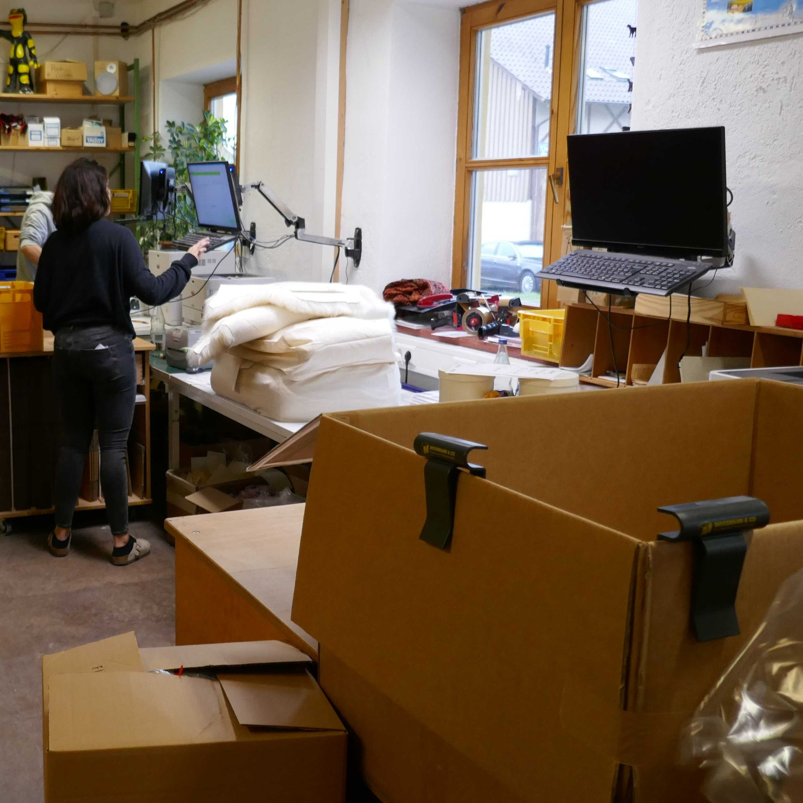
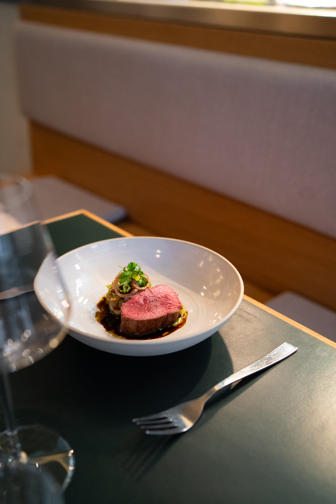
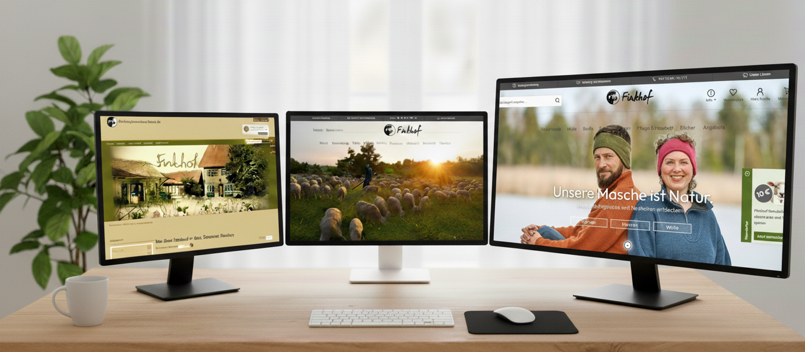

Rolle
Digital-Change- & E-Commerce-Manager mit Führungsverantwortung
Ich bin |
Ich verbinde nachhaltige Werte mit digitalem Fortschritt.
Strategie, Struktur und Menschlichkeit – damit Digitalisierung wirkt.
Ich arbeite an der Schnittstelle von Analyse, digitaler Strategie und Umsetzung. Mich motiviert, Komplexität zu strukturieren und Entscheidungen auch unter Unsicherheit wirksam zu machen – mit Respekt vor Menschen, Ressourcen und Kontext.
Digital-Change- & E-Commerce-Manager mit Führungsverantwortung
Ganzheitliche Transformationsprojekte – von Strategie und Architektur bis zu Umsetzung und Teamentwicklung
Shop- & ERP-Landschaften, Prozessdesign, Datenflüsse, Führung von drei Abteilungen (~50 Mitarbeitende)
Haltung: Digitalisierung ist nur dann sinnvoll, wenn sie Menschen befähigt und wirtschaftlich wie ökologisch trägt. Technologie bleibt Mittel zum Zweck.
in digitaler Strategie, Umsetzung und Change in KMU und Genossenschaften
Nahbare, hierarchiefreie Zusammenarbeit – Zuhören als Führungsstil, wertschätzende Kommunikation und ein Umfeld, in dem jede Perspektive zählt.
Relaunch & Weiterentwicklung eines Onlineshops (Magento → Shopware 5 → Shopware 6)
ERP (Vario 7/8), DMS (bitfarm), Shopware, Marketing-Automation – stabile Datenflüsse, klare Prozesse
Transparente Kommunikation, strukturierte Schulungskonzepte, Rollenklärung, belastbare Umsetzung
Messbare Ergebnisse durch datengetriebene Optimierung, klare Informationsarchitektur und performante Strukturen
Der digitale Podcast von Kai Kallenberger
Ich arbeite mit Menschen, nicht mit Rollen.
Gute Führung entsteht durch Nähe, Respekt und das Vertrauen, dass jede Stimme wertvoll ist.
Diese Haltung begleitet mich seit Jahren – sie macht mich als Führungskraft nahbar und schafft ein Umfeld, in dem Teams wachsen können.

Kurzbeschreibung: Informationsarchitektur geschärft, Konsistenz erhöht, Leistung stabilisiert.

Kurzbeschreibung: Nutzerzentriertes E‑Commerce, präzise Navigation, hohe Klarheit.

Kurzbeschreibung: Turnaround durch klare Ziele, Fokus und kontinuierliche Iteration.

Kurzbeschreibung: Aufbau und Leitung eines Fine-Dining-Konzepts mit voller Prozess- und Teamverantwortung.
Leitung Digitalisierung & E-Commerce | 50 Mitarbeitende
→ Shop-Relaunch (Magento → Shopware 6), ERP/DMS-Einführung, Shop Usability Award 2018.
→ Einführung DSGVO-konformer Prozesse, Digitalisierung der Betriebsabläufe und nachhaltige Prozessoptimierung.
Aufbau & Leitung Fine-Dining-Konzept, Prozess- & Teamverantwortung.
→ Organisation, Budgetplanung, Qualitätsmanagement.
Wissenschaftliche Projektleitung, Clusterforschung, internationale Kooperation.
→ Datenanalyse, Stakeholder-Management, Forschungskoordination.
Eventmanagement, Marketing, Projektkoordination.
→ Planung und operative Umsetzung von Projekten in Marketing & Kommunikation.
Diplom-Geograph (Goethe-Uni Frankfurt, Note 1,6) – Schwerpunkte: Wirtschaft & Gesellschaft.
KI-Manager (A-Leecon, 2025), E-Commerce-Manager (bwgv, 2023).
Digitale Strategie · Prozessoptimierung · Change Management · Führung · SEO/SEA-Basics · Datenanalyse · Datenschutz (DSGVO) · IT-Security-Basiswissen · Kommunikations- & Schnittstellenmanagement · Agile Projektsteuerung.
Shopware 5/6 · Vario 7/8 ERP · bitfarm DMS · Brevo · Matomo/etracker · MS Teams/Office · KI-Tools (LLMs, Automatisierung) · SQL (Basis) · DSGVO-Tools · Consent Management & Policy Frameworks · Projektmanagement-Tools (Trello, Miro).
Auszeichnung in der Kategorie Small Business als Nachweis für exzellentes, nutzerzentriertes E‑Commerce-Handwerk.
Vorher/Nachher: klarere Informationsarchitektur, bessere Orientierung, stabile Performance.
Wandel vom ertragsschwachen, analogen zum wachstumsstarken digitalen Geschäftsmodell sowie messbare KPI-Verbesserungen durch stringente Priorisierung und sauberes Delivery.

Unklare Navigationsmuster, inkonsistente Inhalte, fehlende Priorisierung.
Entscheidungen unter Unsicherheit – Hypothesen bilden, testen, iterativ schärfen.
Komplexität reduzieren, Unsicherheiten strukturieren und handlungsfähige Optionen entwickeln. Durch gezielte Hypothesenbildung, iterative Tests und klare Priorisierung entstand eine belastbare Entscheidungsgrundlage, die Navigation, Inhalte und technische Umsetzung wirksam ausrichtete.
Eine klarere Navigation, konsistente Taxonomie und eine performante Struktur führten zu einer spürbar besseren Nutzerführung – und zu einer Umsatzsteigerung von über 20 % im Folgejahr nach dem Relaunch.
Analyse, Informationsarchitektur, Abstimmung, Umsetzung und Review.
„Verbindlich, strukturiert und zuverlässig in der Umsetzung.“
„Bringt Ordnung in komplexe Situationen und liefert.“
Bevorzugte Kontaktwege:
Hinweis: Keine Tracker, keine Cookies. Formulare nur mit klarer Zweckbindung.